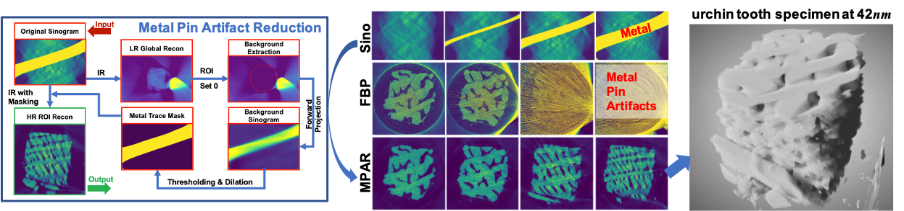

Mengzhou Li is a PhD student at Dr. Ge Wang's lab and enjoys solving real-world problems from both hardware and software sides. His work on 'Limited Energy Loss reading criterion' was adopted in ISO standard for highest reading accuracy in optical measurement of grooves. His recent research interest covers the whole chain of Photon-Counting CT imaging from the correction for data imperfection, system misalignment, and patient motion to the deep reconstruction. He is the recipient of Science and Technology Progress Award 2017 by Chinese Society for Measurement and Standards Innovation Contribution Award 2022 by State Administration for Market Regulation of China.
(a) LR medical CT (global scan) + HR robotic CT (local scan) ⇒ Accurate 50 μm HR VOI imaging at normal CT scan radiation dose for middle and inner ear diseases diagnosis and treatment.
(b) Permanent magnet made low field MR + Low-cost CT ⇒ Cost-effective CT-MRI prototype for portability, popularity, and point of care. Particularly valuable for disaster scenes and battle fields.
Ultrahigh resolution CT achieved beyond the mechanical precision limit of Robotic arms with locally linear embedding-based motion correction method compensating the coordination error and system misalignment.
In nano-CT the metal pin supporting the specimen could sometimes occlude partial of the sinogram and cause strong artifacts. With our MPAR method, structures are recovered under different occlusion ratios.